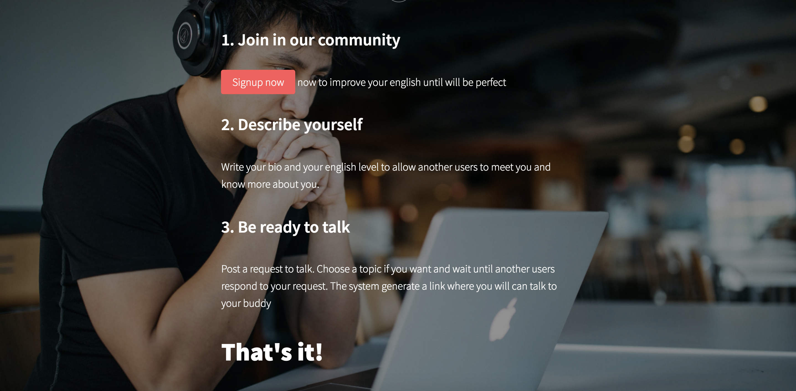
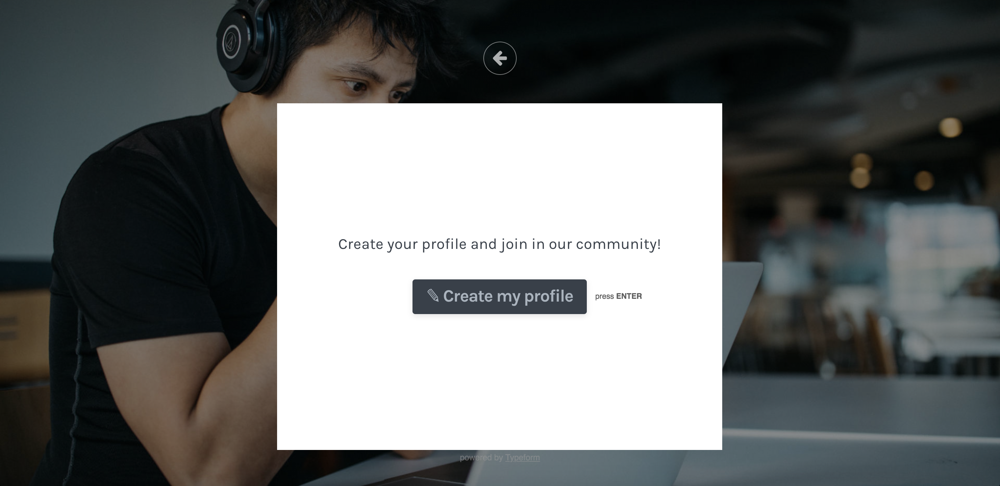

Qualche post fa, ho lanciato una sfida a me stesso: Sviluppare un side-project in pubblico dal primo giorno, condividendo i progressi qui e su Instagram.
Se non sai di che progetto sto parlando, allora leggi qui così potrai saperne di più.
E’ arrivato il momento di scrivere due update per farti sapere come sta andando (pensavo che la cosa morisse, invece no!).
Attualmente la mia testa mi ha detto di chiamarlo Taalk, che poi non è così male, ma non so se manterrò il nome.
Se hai idee su un possibile nome, scrivimi.
Per natura siamo portati a complicarci sempre la vita, ed io sono il primo, però questa volta ho deciso di mantenere le cose semplicisssssssime.
Ho buttato giù un semplicissimo sito per presentare il servizio, sviluppato senza scrivere una riga di codice grazie a Carrd ed integrando Typeform per ricevere le iscrizioni degli utenti.
Clicca qui per vedere il sito, mentre di seguito un paio di immagini


Fine!
Come lo sto diffondendo? Come procede? Ne parlerò in uno dei prossimi post 🤙🤙
Se ti vuoi iscrivere, allora clicca sul bottone qui sotto e crea il tuo profilo.
Alla prossima!
Written on June 25th, 2018 by Davide